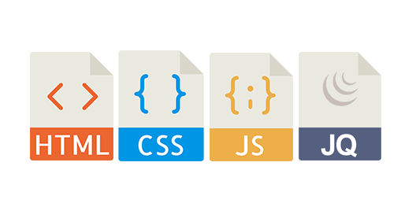
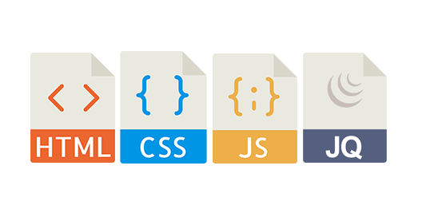
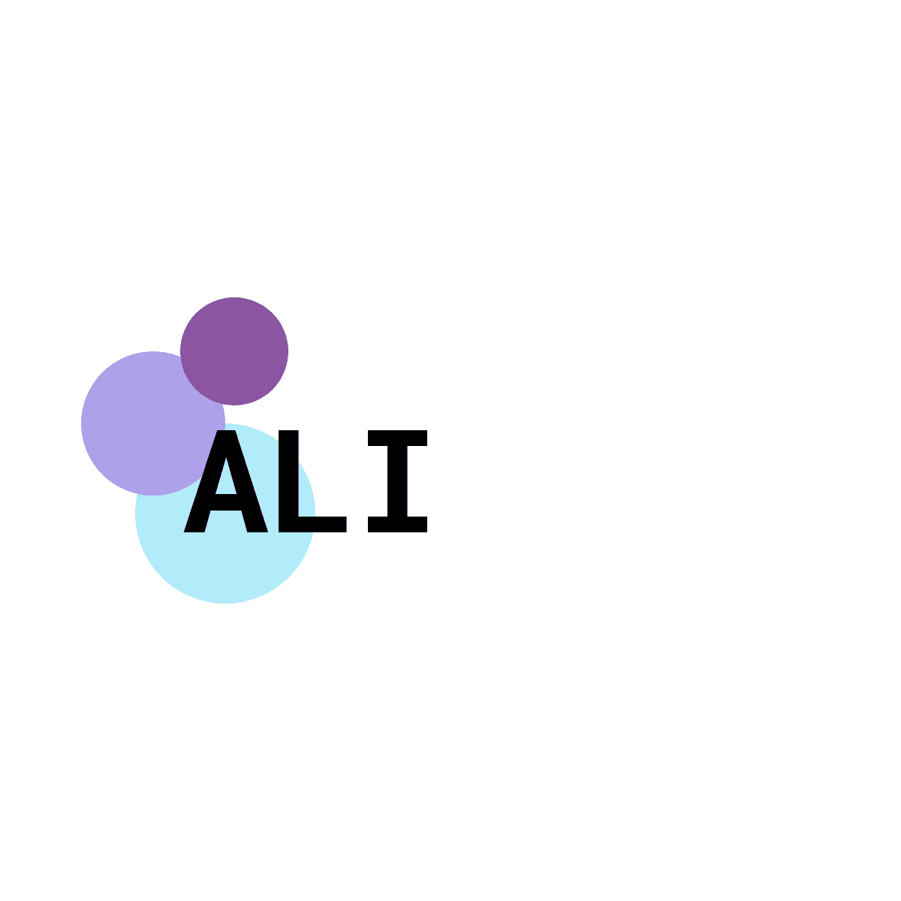
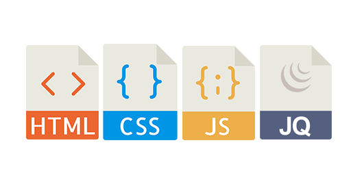
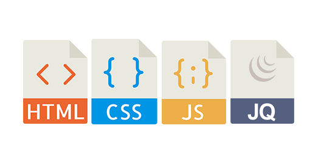
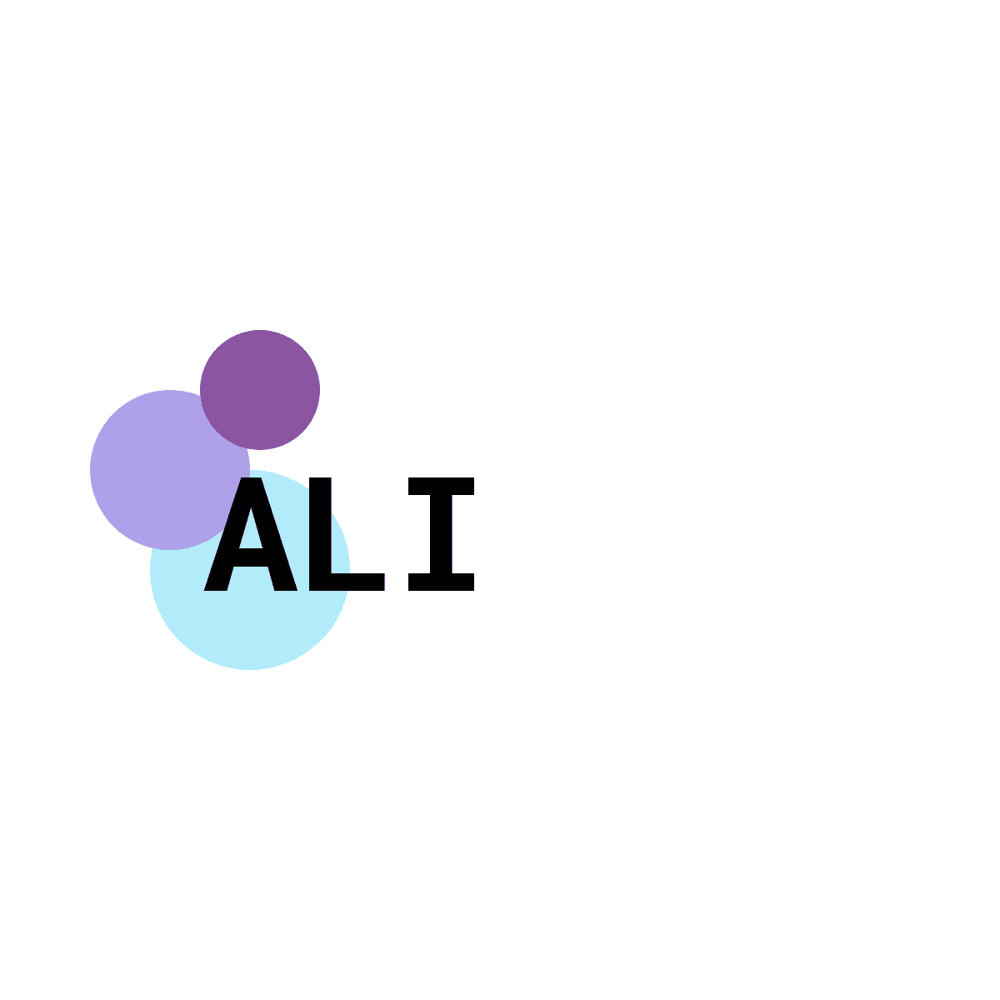

I am Muhammad.
A Web Developer
 

A Web Developer

I am Designing and Coding Web pages using user interface best practices, including accessibility and usability using HTML, CSS, JavaScript Develop pages in HTML5, CSS3, jQuery and CMS considering user interface best practice. Started project with no web development experience. Used Bootstrap to design responsive web pages. Created HTML5/CSS3 code using mockup image. Updated, developed and fixed multiple websites...

I am student of Computer Science because the world of computers and their integration has exploded in recent years. It has been incredible to observe the development of the computer, from something that was originally the size of a small room and now can fit easily into your hand and has become an integral part of modern society finding uses in just about everything. I have developed a keen interest in computers since long ago, and have been fascinated by how they work, as well as the advances in technology.

Computing is by no means a mature market and is ever-evolving. I would like to gain a broad academic insight and build a career in an advancing industry that would stimulate and interest me My interest in computer science is broad, but I am especially interested in strengthening my understanding of programming and web development. In other words initially, I am targeting to be a FRONTEND DEVELOPER.